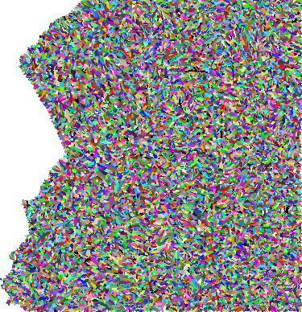
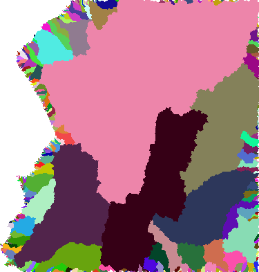

Stream Analysis¶
Pre-analysis steps¶
The following steps should have been completed before the DEM is ready for river picking. See section on preparing your data if in doubt.
The DEM (Digital Elevation Model) has been downloaded and turned into a single raster.
The DEM is projected into metres - you do not want to be working in degrees.
The DEM has been checked for any holes/spikes/or errors.
You’ve initiated a GRASS Project and now within the GRASS GIS’s own shell set up.
Importing and displaying GDAL Raster Data¶
Importing and extent of DEM¶
To import your DEM into GRASS, navigate to the directory containing the DEM files from the command line.
cd destination_folder/project
r.in.gdal input=dem.tif output=dem
To check or change the regional extent of your raster datset, use g.region.
g.region -p
--------------------
projection: 1 (UTM)
zone: 37
datum: wgs84
ellipsoid: wgs84
north: 4213386.67972946
south: 3874847.25407434
west: 134877.89022413
east: 324399.35901918
nsres: 29.13921722
ewres: 29.13921722
rows: 11618
cols: 6504
cells: 75563472
If region has been changed, you can bring it back to its full extent and original resolution by typing:
g.region rast=dem
Displaying Raster Data¶
Output dem from GRASS GUI display monitor DEM masked using a catchment boundary shapefile¶
The GUI interface can be used in the same way as ArcGIS to add and manipulate raster datasets. The following instruction will use the command line, with the advantage of allowing short scripts to create and save map images. It is good practice to check processing steps as you go along, particularly if you are changing the computational region. You can display the raster DEM in a graphical interface from the command line using d.mon and all display modules are prefixed with d.*.
# Starts display window using monitor wx0
d.mon start=wx0
# Uses a scalable elevation color scheme for the topo map
r.colors map=dem color=elevation
# Displays topo map
d.rast map=dem
# Save display
d.out.file output=folder/dem format=png
Masking to Coastlines¶
Before proceeding with hydrological processing of the dem, make sure your region is delineated to the desired extent. First mask the dem to coastlines or any other desired shape polygon i.e. catchment or country. Any subsequent raster operations will be limited to the area within the mask.
GSHSS Coastlines. High resolution shoreline data can be downloaded from the National Oceanic and Atmospheric Adminstration (www.noaa.gov). Make sure you download Level 1 data which contains continental land masses with a complete hierachically arranged closed polygon for masking.
Import shapefile. Import coastline data to the regional extent of the dem which GRASS will reproject from lat long to the DEM’s projected coordinates on the fly.
#Import shapefile
v.import input=GSHSS_h_L1.shp output=coast extent=region
#View shapefile
d.vect map=coast width=2 type=boundary
# Mask dem using shapefile
r.mask vector=coast
# Display masked dem to check your results
d.rast dem
#Removing mask
r.mask -r
Creating Hillshades¶
Shaded relief map¶
To create a shaded relief map from a DEM, use r.relief. Default settings used for altitude: 30 degrees above the horizon; azimuth: 270 degrees east from north; and exaggeration z-scaling factor of 1 can all be changed. The map is assigned a grey-scale color table. It is possible to add color to shaded relief maps using d.shade.
#Hillshade using dem color table
r.relief input=dem output=dem_shade
#Displaying draped dem over shaded relief raster map
d.mon wx0
d.shade shade=dem_shade color=dem
#Combining shaded relief and dem rasters for output
r.blend first=dem second=dem_shade \
output=colored_shaded_relief percent=40
d.rgb r=colored_shaded_relief.r g=colored_shaded_relief.g \
b=colored_shaded_relief.b
Watershed Analysis¶
Filling DEM¶
To fill or not to fill. DEM’s will have numerous sinks, so before rivers can be extracted, a hydrologically consistent surface needs to be produced. Local depressions will interrupt flow-routing alogorithms and produce incorrect stream networks if incorrect patterns of flow accumulation have been created. However, it is worth noting that not all sinks are errors due to resolution of the data or rounding of elevations to the nearest integer, these sinks can be real-life features. GRASS r.watershed module does not require DEM’s to be filled. Instead it uses a least-cost search A* algorithm to traverse the elevation surface from the outlet. Whether you decide to fill your DEM before processing, will depend on what aspects you are exploring.
Stream Flat Artefacts. (A) GRASS Stream network extracted from an unfilled dem. (B) ArcGIS stream network using filled DEM. (C) GRASS stream network using filled dem.¶
Filling. GRASS r.fill.dir module fills DEM’s in the same way as ArcGIS’s Fill tool (available as part of ArcGIS’s spatial analyst licence). GRASS follows Henson and Domingue (1998) to filter and fill the elevation map. Using the neighborhood technique, r.fill.dir fills depressions with one pass across the elevation model and to produce a flow direction map by assigning flow direction towards the steepest slope from one of the 8 surrounding cells (D8 algorithm). In flat areas, where cells in a number of different directions have the steepest slope, the algorithm will iteratively try different routes by propogating flow directions from areas where directions are know into areas that can’t be resolved. If r.fill.dir is unable to fill problem areas on first pass, run r.fill.dir repeatedly (using output from one run as input to the next run) to fill all problem areas. Be aware that these depression-filling algorithms create artifical features (e.g. flats leading to parallel streams).
#Sets computational region
g.region raster=dem -p
#Fills dem
r.fill.dir input=dem output=dem_fill direction=fdir \
areas=dem_sinks
Difference map comparing filled vs unfilled dem for (A) ArcGIS fill tool and (B) GRASS r.fill.dir tool.¶
Use raster calculator to generate a difference map showing pixelwise differences between the raw and filled dem:
# Create diff map
r.mapcalc "dem_diff = dem_fill - dem"
r.colors dem_diff color=differences
# assess univariate statistics of differences
r.univar -e dem_diff
# vectorize filled areas (see r.univar output,
# fills are positive values)
r.mapcalc "dem_fill_area = if(dem_diff > 0.0, 1, null() )"
r.to.vect input=dem_fill_area output=dem_fill_area type=area
# visualise differences using hillshade
r.relief input=dem_fill output=dem_fill_shade
d.mon wx0
d.shade shade=dem_fill_shade color=dem_fill
d.vect dem_fill_area type=boundary color=red
Large datasets. Grass’s r.fill.dir module does not cope well with large raster datasets. It is worth exploring python modules like Richdem created by Richard Barnes from Berkeley to fill DEMs before importing into GRASS. Below is an example using Richdem in python to fill the DEM and compare output with the unfilled DEM.
{kind=link}
import richdem as rd
input="dem.tif"
output="dem_filled.tif"
#Load DEM
dem = rd.LoadGDAL(input)
#Copy the DEM if intending to create diff map
#Skip this step if not interested in comparing DEMs
demorig = dem.copy()
#Fill depressions in the DEM. The data is modified in-place
#to avoid making an unnecessary copy. This saves both time and RAM
rd.FillDepressions(dem, epsilon=False, in_place=True)
#Compare difference of the filled and unfilled DEM
diff = dem - demorig
#Display the difference.
#Do not plot values where there was no difference.
#Note: none of the *rd.rdShow* modules worked for me
#but can be easily plotted up in GMT as in the figure above
rd.rdShow(diff, ignore_colours=[0])
#Save the DEM
rd.SaveGDAL(output, dem)
Extracting Stream Network¶
Flow Accumulation¶
Flow accumulation can be generated using the GRASS module r.watershed. Ths is based on the least cost path (LCP) algorithm by Hart et al., 1968 and Ehlschlaeger, 1989 originally designed to increase processing speed and reduce memory use. Outlets, or pour points, are the lowest point along the map boundary where at least one neighbouring cell has unknown elevation (i.e. masked coastlines). Instead of using the path of steepest descent, the search proceeds along the least steep uphill slope from a pour point sorted on cost (i.e. lowest elevation). If a sink is encountered, the search will take the steepest descent to the bottom of the depression and then continue uphill as before. The search continues until all grid points have been processed.
The flow accumulation raster can be created using r.watershed with the option of using single flow direction (-s flag) or multiple flow direction (-m flag).
Inputs: |
Filled dem |
Output: |
Flow accumulation raster |
r.watershed -s ele=dem acc=facc
Stream Network¶
The GRASS module r.stream.extract will output both a flow direction raster and stream network. Note that both modules r.stream.extract and r.watershed produce slightly different vector layers, so use r.stream.extract to create the vectorised stream network.
Inputs |
filled dem, flow accumulation raster |
Threshold |
min flow accumulation to initiate streams |
Outputs |
flow direction, stream network raster and vector layer |
The threshold will determine the river network density. You will need to play around with this number and check the fidelity of stream network with Landsat and/or satellite imagery. For example, a threshold of 300 will extract streams with a minimum drainage area of 0.27 km 2 for a 30 m dem or 2.43 km 2 for a 90 m dem.
r.stream.extract elevation=dem accumulation=facc \
threshold=300 stream_rast=stream \
stream_vector=stream direction=fdir
Creating Catchments¶
 {kind=link}
{kind=link}
Sub-catchments extracted using r.watershed v. main watershed extracted using r.stream.basins
While r.watershed outputs a basins raster, the resulting basin raster identifies all sub-catchments. Use the -l flag in the r.stream.basins module to identify main watersheds in the DEM of interest.
r.stream.basins -l direction=fdir stream_rast=stream \
basins=basin
Incomplete Basins¶
Incomplete basins will underestimate flow accumulation which can be a problem where the regional extent of the dem truncates complete catchment areas. The flow accumulation raster will identify these areas with negative values and problem areas can be identified using the raster calculator. If these incomplete basins are problematic for subsequent analysis, expand the region of interest and re-create the rasters following the steps above.
Inputs required: Filled dem, basin
#To identify parts of the basin likely to underestimate
#flow accumulation
r.mapcalc "problems = if(facc < 0, basin, null())"
Extracting Individual Streams for Plotting¶
Right: River long profile and drainage area Left: Plan view of river profile.¶
The following example is based on having a list of X Y coordinates for channel heads of interest. This can be done in two ways, depending on the region of interest. To extract all streams in the DEM, the X Y coordinates can be taken from the starting nodes of the vectorised stream network.
v.out.ascii in=stream_300 where="stream_type=start" \
out=channel_heads.dat format=point layer=-1 separator=',' --o
Alternatively, a randomised set of starting points taken from the flow accumulation grid using the same threshold values.
r.mapcalc "facc_300 = if( "facc" == 300, 1, null())"
v.out.ascii in=facc_300 out=channel_heads.dat \
format=point layer=-1 separator=',' --o
Next, convert the flow direction raster into degrees. Flow direction is of D8 type with a range of 1 to 8. Multiplying values by 45 gives degrees counter clockwise from East.
r.mapcalc "fdir_deg = if(fdir != 0, 45. * abs(fdir), null())"
Once we have the coordinates for each of the channel heads in a file, we run r.drain in a loop to create a vector line layer for individual stream channels. For our purposes, we want to extract point information along the river profile. Using v.to.point, points are created along an individual stream at a maximum distance no greater than the resolution of the dem. The output vector map has 2 layers - layer 2 stores each point as a unique category together with the distance from the line’s start stored as ’along’. Use v.what.rast to retrieve values for elevation from the dem and drainage area pixels from the flow accumulation raster and add those columns to the points file. Now the river data is ready for extraction as an ascii file for further analysis.
#Setting parameters
#Determining cell resolution to calculate drainage area
eval `g.region -g`
SQ_M=$( echo "${ewres}*${nsres}" | bc -l )
echo "Cell resolution: $SQ_M m^2"
#DEM resolution
res=30
#Loop to extracting river channels
i=0
while read X Y; do
echo "$X, $Y"
i=$(( ${i} + 1))
#Determine individual stream path
r.drain input=dem direction=fdir_deg output=cpath_$i \
drain=cpath_$i start_coordinates=$X,$Y --o
#Extract X, Y coordinates and distance along channel
v.to.points input=cpath_$i output=cpath_pnt$i \
use=vertex dmax=${res} layer=-1 --o
#Extract elevation at each point
v.what.rast cpath_pnt$i raster=dem column=elev layer=2 --o
#Extract flow accumulation at each point
v.what.rast cpath_pnt$i raster=facc column=accum_pixels layer=2 --o
v.db.addcolumn cpath_pnt$i columns="accum_area double" layer=2 --o
#Convert flow accumulation pixels to m^2
v.db.update cpath_pnt$i column=accum_area \
query_col="accum_pixels*${SQ_M}" layer=2 --o
#Drop column with flow accumulation pixels
v.db.dropcolumn cpath_pnt$i columns="accum_pixels" layer=2 --o
v.out.ascii -c input=cpath_pnt$i layer=2 columns=* \
separator=' ' output=riv$i.dat --o
#Output each stream channel in a seperate ascii file
echo "Created stream: $i"
done < channel_heads.dat
Example ASCII file output
east north cat along elev accum_area
230061.14327134 3987135.22762934 1 0.00000000 586 5094.56388117
230061.14327134 3987164.36684656 2 29.13921722 585 221613.52883072
230032.00405412 3987193.50606378 3 70.34829341 585 236048.12649403
230002.8648369 3987193.50606378 4 99.48751063 584 252180.91211772
229973.72561968 3987193.50606378 5 128.62672785 584 253879.10007811
229944.58640246 3987193.50606378 6 157.76594507 583 257275.47599889
229915.44718524 3987193.50606378 7 186.90516229 580 258973.66395928
229886.30796802 3987193.50606378 8 216.04437950 579 393979.60681018
229857.1687508 3987222.645281 9 257.25345569 579 394828.70079037
229828.02953358 3987251.78449822 10 298.46253188 577 410961.48641406
229798.89031636 3987251.78449822 11 327.60174910 573 452567.09144359
229769.75109914 3987280.92371544 12 368.81082529 570 456812.56134456
229740.61188192 3987310.06293266 13 410.01990148 557 461907.12522572
229711.4726647 3987310.06293266 14 439.15911870 553 472945.34696825
229682.33344748 3987339.20214988 15 480.36819489 545 476341.72288903
229653.19423027 3987339.20214988 16 509.50741211 537 479738.09880980
229624.05501305 3987339.20214988 17 538.64662933 529 485681.75667117
The raw river ASCII file will need to be processed before it can be used together with the river inversion code.
Exporting Vectors¶
Export vector layers using the v.out.ogr module. This tool allows you to specify any number of different output formats. This code example uses GMT. Remember for stream networks, make sure to specify that the type=line. Areas seem to be automatically picked up with no complaints by GMT when it comes to plotting.
v.out.ogr input=vector_file output=vector_file.shp \
format="OGR_GMT"
Useful Commands¶
To check the list of rasters or vector files generated during the hydrological analysis, use:
g.list raster
g.list vector
Another useful tool to check metadata of the raster or vector layer – which will also tell you what tool and criteria you used to generate the raster layer is ‘r.info raster’.
r.info rasterfilename
v.info vectorfilename